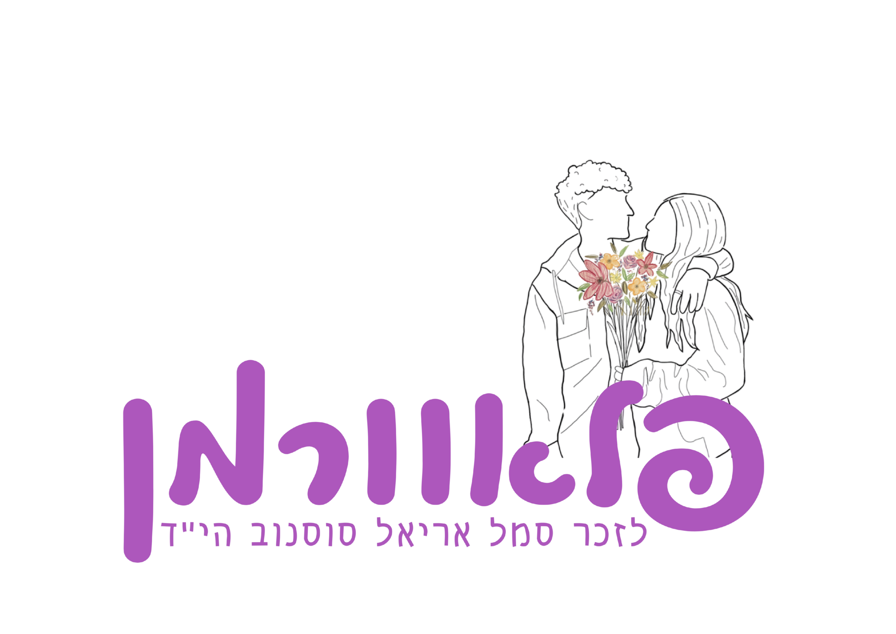

כלי הנגישות
הגדל טקסט
הקטן טקסט
גווני אפור
ניגודיות גבוהה
ניגודיות הפוכה
רקע בהיר
הדגשת קישורים
פונט קריא
איפוס

התחברות מנהל
עברית
English
דף הבית
על אריאל
על הפרוייקט
תמכו בנו
גלריה
הפעילות שלנו
השיתופים שלכם
צרו קשר
גלרייה
כל התמונות מפעילות פלאוורמן בנקודות השונות
מרכזית ירושלים
מרכזית המפרץ
סבידור מרכז
בסיס כיסופים
מחנה ג'וליס
בה"ד 1
שערי צדק